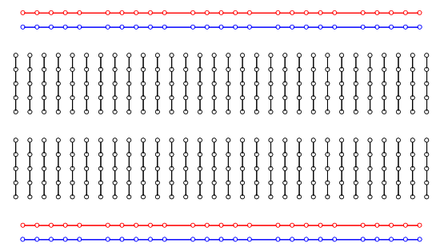
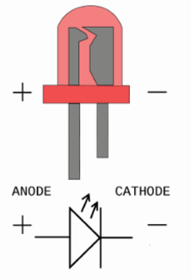
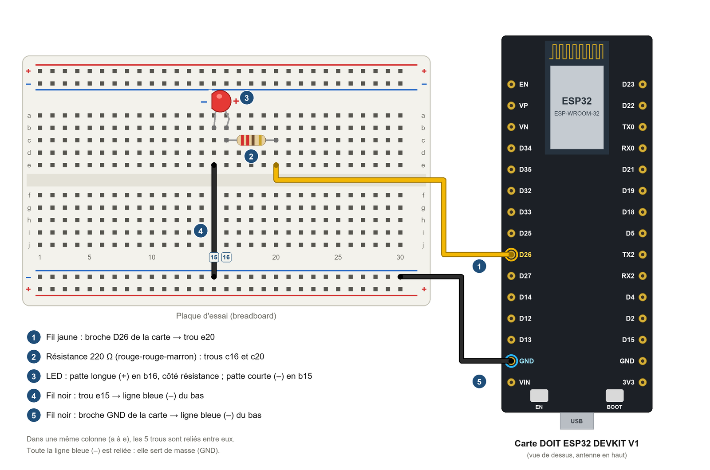
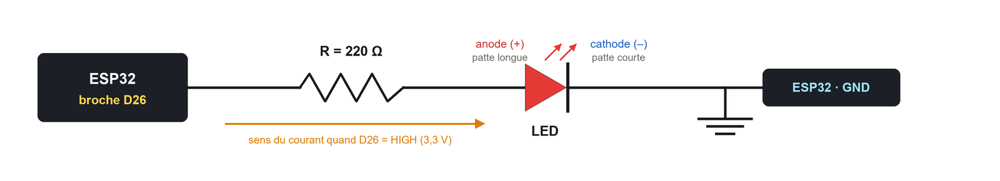
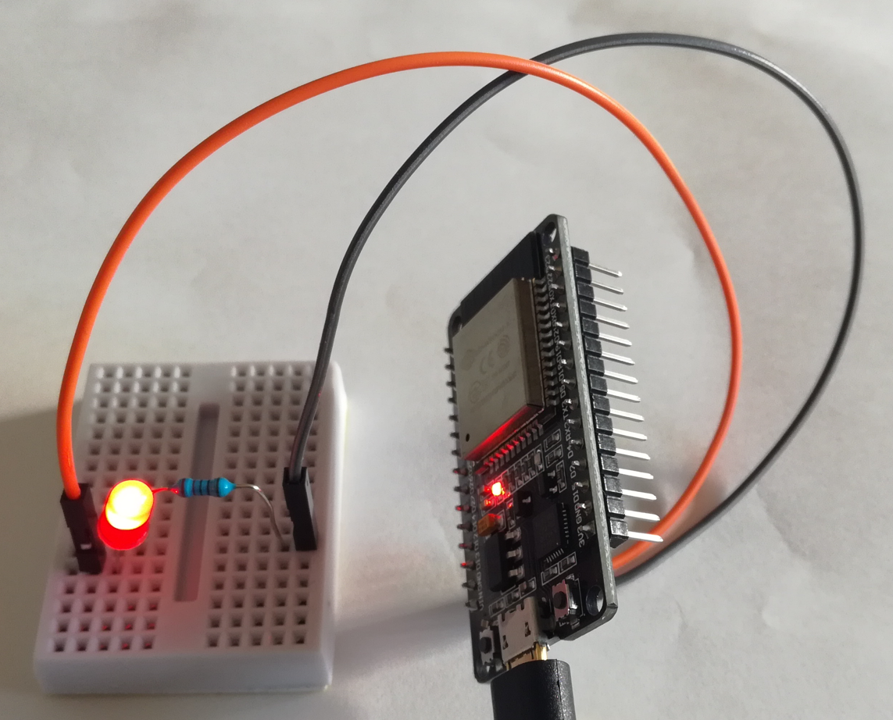

Travaux pratiques — IoT · 04
Vous câblez la LED, écrivez et testez votre propre programme dans l'Arduino IDE, découvrez le tableau de bord du TP dans le générateur, puis téléversez le programme du serveur web : un appui sur le voyant de la page allume ou éteint la LED.
Ce qui vous est fourni
Votre travail : le câblage, vos programmes (allumer et éteindre la LED, la faire clignoter), la découverte du tableau de bord, le téléversement du serveur web, les tests et les questions.
Matériel | Remarque |
|---|---|
1 carte DOIT ESP32 DEVKIT V1 + câble micro-USB | Le câble doit permettre le transfert de données (pas seulement la charge) |
1 LED (rouge, par exemple) | Patte longue = anode (+), patte courte = cathode (–) |
1 résistance de 220 Ω | Anneaux de couleur : rouge – rouge – marron (puis or) |
1 plaque d'essai (breadboard) | |
2 fils mâle-femelle (1 jaune, 1 noir) + 1 fil mâle-mâle noir | Côté femelle : sur les broches de la carte ; côté mâle : dans la plaque d'essai |
1 ordinateur avec l'Arduino IDE | Les cartes ESP32 sont déjà installées |
1 smartphone (ou l'ordinateur) avec un navigateur web | Connecté au même réseau Wi-Fi que la carte |
Pour la partie 11 : 2 LED de couleurs différentes + 2 résistances de 220 Ω + 2 fils mâle-femelle | Une LED jaune et une LED verte, par exemple : avec la LED rouge, on obtient trois couleurs comme au jeu Simon |
La breadboard
L'objectif d'une "breadboard" est de pouvoir faire des connexions simplement entre des composants (résistances, LEDs, Capacités, etc ...) sans souder. Elle est idéale pour tester un circuit ou réaliser un montage temporaire.
Techniquement, une breadboard est une plaque pleine de trous reliés entre eux selon un schéma bien spécifique et commun à toutes les plaques que voici :

La LED
Une diode électroluminescente, aussi appelée LED pour "Light-Emitting Diode", est un composant électronique qui a la particularité d'émettre une lumière lorsqu'il est parcouru par un courant électrique.
Ce composant de la famille des semi-conducteurs est dit "passif". Son sens est déterminé grâce aux 2 parties qui composent ce composant : l'Anode et la Cathode. Pour s'illuminer, le courant doit parcourir la LED de l'anode vers la cathode.
Il y a plusieurs façons pour définir et reconnaitre le sens d'une LED :

Rappels


D26 de la carte, du côté mâle dans le trou e20 de la plaque d'essai.c16 et c20 (elle n'a pas de sens).b16, patte courte (–) dans le trou b15.e15 à la ligne bleue (–) du bas.GND de la carte (côté gauche, sous D13) à la ligne bleue (–) du bas.Élément | De | Vers |
|---|---|---|
Fil jaune | Broche D26 de la carte | Trou e20 |
Résistance 220 Ω | Trou c16 | Trou c20 |
LED | Patte longue (+) : trou b16 | Patte courte (–) : trou b15 |
Fil noir | Trou e15 | Ligne bleue (–) du bas |
Fil noir | Broche GND de la carte | Ligne bleue (–) du bas |
Faites vérifier votre câblage par l'enseignant avant de brancher la carte.
Avant d'utiliser le serveur web, vérifiez que vous savez commander la LED avec un programme que vous écrivez vous-même dans l'Arduino IDE.
Fichier > Nouveau croquis. Enregistrez-le sous le nom Test_LED.Outils > Carte > esp32 > DOIT ESP32 DEVKIT V1) et le port (Outils > Port).setup(), pinMode(broche, OUTPUT) déclare la broche en sortie, puis digitalWrite(broche, HIGH) met la broche à 3,3 V : la LED s'allume.Téléverser (flèche →) et observez la LED.digitalWrite(broche, LOW) met la broche à 0 V. Téléversez et observez.Allumer et éteindre la LED depuis le moniteur série
Modifiez votre programme : la LED s'allume quand vous envoyez 1 dans le moniteur série, et s'éteint quand vous envoyez 0. Aide : Serial.begin(115200) dans setup() ouvre la liaison avec le moniteur série ; dans loop(), Serial.available() > 0 indique qu'un caractère est arrivé, Serial.read() le lit, et if (c == '1') teste sa valeur.
Téléversez, ouvrez le Moniteur série (115200 bauds), tapez 1 puis Entrée, puis 0 puis Entrée. C'est déjà le principe du serveur web : un message arrive, la carte commande la broche. Avec le serveur web, le message viendra du navigateur, par le Wi-Fi.
Le tableau de bord est la page web que la carte affichera dans le navigateur. Il se crée avec le générateur de tableau de bord, sans programmer. Pour ce TP, il est déjà créé : c'est le modèle « TP LED ».
Generateur_Page_Web_ESP32_etudiant.html, ou ouvrez celdobigeon.github.io/IoT dans le navigateur.Pour ce TP, vous n'avez pas à télécharger ce programme : le programme du serveur web est fourni (ESP32_Serveur_Web_LED.ino) et affiche le même voyant cliquable. Dans les TP suivants, vous créerez vous-même votre tableau de bord et vous téléchargerez son programme.
Ouvrez Animation_LED_Serveur_Web.html et jouez les scénarios dans l'ordre. Cochez « Pas à pas » pour avancer à votre rythme.
Fichier > Ouvrir puis le fichier ESP32_Serveur_Web_LED.ino. Il remplace votre programme de test sur la carte.Outils > Carte > esp32 > DOIT ESP32 DEVKIT V1.Outils > Port (COM3, COM4… sous Windows).Téléverser (flèche →). Si le téléversement bloque sur « Connecting… », maintenez le bouton BOOT enfoncé jusqu'au début du transfert.Moniteur série (vitesse 115200 bauds), puis appuyez sur le bouton EN de la carte. L'adresse IP s'affiche après la connexion.Notez sur votre feuille l'adresse IP de votre carte (par exemple 192.168.1.42) : vous en aurez besoin pour ouvrir la page.
▶ Animation : rejouez « 1. Démarrer la carte » : vous y retrouvez ce qui vient de se passer sur votre carte, de setup() à l'adresse IP affichée dans le moniteur série.

http:// suivi de l'adresse IP de la carte (par exemple http://192.168.1.42).▶ Animation : le scénario « 2. Ouvrir la page » montre ce trajet : le navigateur envoie la requête GET / à la carte, qui répond avec la page construite par handleRoot().
▶ Animation : cliquez sur le voyant du téléphone dans l'animation et suivez la requête GET /on, la fonction handleOn(), le courant dans le fil, puis la page renvoyée avec le voyant rouge.
Revenez à l'Arduino IDE et créez un nouveau croquis, Clignoter_LED. En le téléversant, vous remplacez le programme du serveur web sur la carte.
loop() ; delay(1000) attend 1000 millisecondes.Choisir le nombre de clignotements
for (int i = 0; i < 5; i++) { … } répète 5 fois les instructions placées entre les accolades ; placée dans setup(), la boucle ne s'exécute qu'une seule fois.Pour aller plus loin : choisir le nombre depuis le moniteur série
La carte attend un nombre tapé dans le moniteur série, puis fait clignoter la LED ce nombre de fois. Aide : Serial.parseInt() lit un nombre entier arrivé par le moniteur série.
▶ Animation : pour vous aider, cliquez sur le voyant éteint dans l'animation et lisez les lignes du programme qui s'éclairent.
Comme dans le jeu Simon, trois LED s'allument l'une après l'autre. Chaque LED donne son état à la suivante : la LED 1 s'allume, son état allume la LED 2, et l'état de la LED 2 allume la LED 3.
Le câblage
Le programme
Simon_LED. Déclarez les trois broches en sortie.HIGH, allumez la LED 2. Attendez 500 ms. Aide : digitalRead(broche) renvoie HIGH quand la broche est à 3,3 V ; if (digitalRead(26) == HIGH) { … } teste cet état.loop(), la séquence recommence.Pour aller plus loin : le jeu Simon
La carte allume une séquence de LED au hasard ; le joueur la répète en tapant 1, 2 ou 3 dans le moniteur série. À chaque bonne réponse, la séquence s'allonge d'une LED ; à la première erreur, la carte affiche le score et une nouvelle partie commence. Aide : random(0, 3) tire un nombre au hasard entre 0 et 2 ; un tableau int sequence[20]; garde la séquence ; Serial.parseInt() lit le nombre tapé.
Problème | Solution |
|---|---|
La carte n'apparaît pas dans Outils > Port | Vérifier le câble micro-USB (données), installer le pilote USB (CP210x), changer de port USB. |
Le téléversement bloque sur « Connecting… » | Maintenir le bouton BOOT enfoncé au début du téléversement. |
Des points s'affichent sans fin dans le moniteur série | La carte ne trouve pas le réseau Wi-Fi : prévenir l'enseignant. |
Rien ne s'affiche dans le moniteur série | Régler la vitesse sur 115200 bauds, puis appuyer sur EN. |
La page ne s'ouvre pas | Vérifier que le téléphone est sur le même Wi-Fi et que l'adresse commence par http:// (et non https://). Animation : voir « 3. Couper le Wi-Fi » et « Téléphone en 4G ». |
La page répond mais la LED ne s'allume pas | Vérifier le câblage : sens de la LED, broche D26, colonnes de la plaque d'essai, fil GND. |
La LED ne s'allume pas ou ne clignote pas avec mon programme | Vérifier la broche (26), pinMode(26, OUTPUT) dans setup(), puis le câblage : sens de la LED, colonnes de la plaque d'essai, fil GND. |
Rien ne se passe quand je tape 1 dans le moniteur série | Régler le moniteur série sur 115200 bauds, comme dans Serial.begin(115200), puis taper 1 et Entrée. |
La LED clignote sans s'arrêter au lieu de 5 fois | La boucle for est dans loop(), qui se répète sans fin : la placer dans setup(). |
Une des trois LED ne s'allume jamais | Vérifier sa broche (D27 ou D14) dans le câblage et dans pinMode(), le sens de la LED et sa liaison à la ligne bleue (–). |
Pour information : ce programme est déjà prêt, vous n'avez pas à le modifier. Vous retrouvez les mêmes lignes dans l'animation.
// TP IoT - Piloter une LED avec un serveur web sur ESP32
// Carte : DOIT ESP32 DEVKIT V1 - LED + résistance 220 ohms sur la broche D26 (GPIO 26)
#include <WiFi.h>
#include <WebServer.h>
const char* ssid = "NOM_DU_RESEAU"; // nom du réseau Wi-Fi (2,4 GHz)
const char* password = "MOT_DE_PASSE"; // mot de passe du réseau Wi-Fi
const int LED_PIN = 26;
WebServer server(80); // serveur web sur le port 80
bool etat_led = false;
// Construit la page HTML envoyée au navigateur
String page() {
String html = "<!DOCTYPE html><html><head><meta charset='utf-8'>";
html += "<meta name='viewport' content='width=device-width'></head><body>";
html += "<h1>LED : ";
html += etat_led ? "allumée" : "éteinte";
html += "</h1>";
// Voyant cliquable : il ouvre /off si la LED est allumée, /on si elle est éteinte
html += etat_led ? "<a href='/off'>" : "<a href='/on'>";
html += "<div style='width:80px;height:80px;border-radius:50%;border:3px solid #333;background:";
html += etat_led ? "#ff2020;box-shadow:0 0 30px #ff2020" : "#555";
html += "'></div></a>";
html += "<p>Appuyez sur le voyant pour ";
html += etat_led ? "éteindre" : "allumer";
html += " la LED.</p>";
html += "</body></html>";
return html;
}
// Appelée quand le navigateur demande l'adresse /
void handleRoot() {
server.send(200, "text/html; charset=utf-8", page());
}
// Appelée quand le navigateur demande l'adresse /on
void handleOn() {
digitalWrite(LED_PIN, HIGH);
etat_led = digitalRead(LED_PIN);
server.send(200, "text/html; charset=utf-8", page());
}
// Appelée quand le navigateur demande l'adresse /off
void handleOff() {
digitalWrite(LED_PIN, LOW);
etat_led = digitalRead(LED_PIN);
server.send(200, "text/html; charset=utf-8", page());
}
void setup() {
Serial.begin(115200);
pinMode(LED_PIN, OUTPUT);
digitalWrite(LED_PIN, LOW);
WiFi.begin(ssid, password); // connexion au Wi-Fi
Serial.print("Connexion au Wi-Fi");
while (WiFi.status() != WL_CONNECTED) {
delay(500);
Serial.print(".");
}
Serial.println();
Serial.print("Adresse IP : ");
Serial.println(WiFi.localIP()); // adresse à taper dans le navigateur
server.on("/", handleRoot); // adresse -> fonction
server.on("/on", handleOn);
server.on("/off", handleOff);
server.begin(); // démarrage du serveur web
}
void loop() {
server.handleClient(); // traite les requêtes des navigateurs
}Couleurs de l'Arduino IDE : orange = fonctions d'Arduino et des bibliothèques, bleu-vert = types et constantes, vert olive = structure du programme, gris = commentaires. Les noms en noir sont choisis par le programmeur.